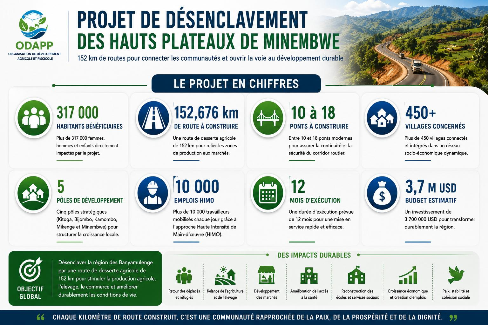
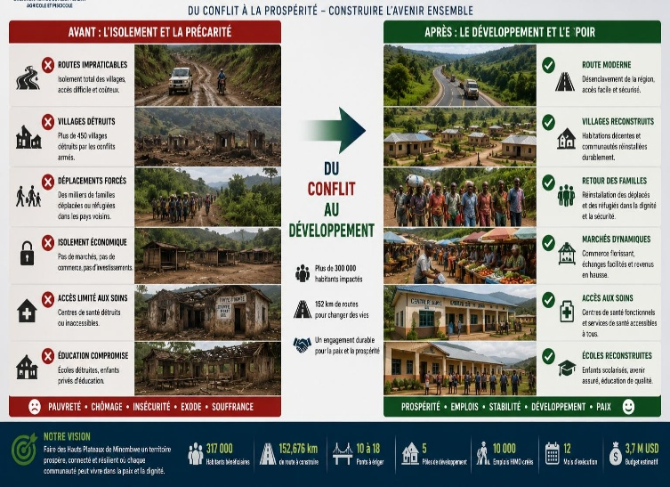
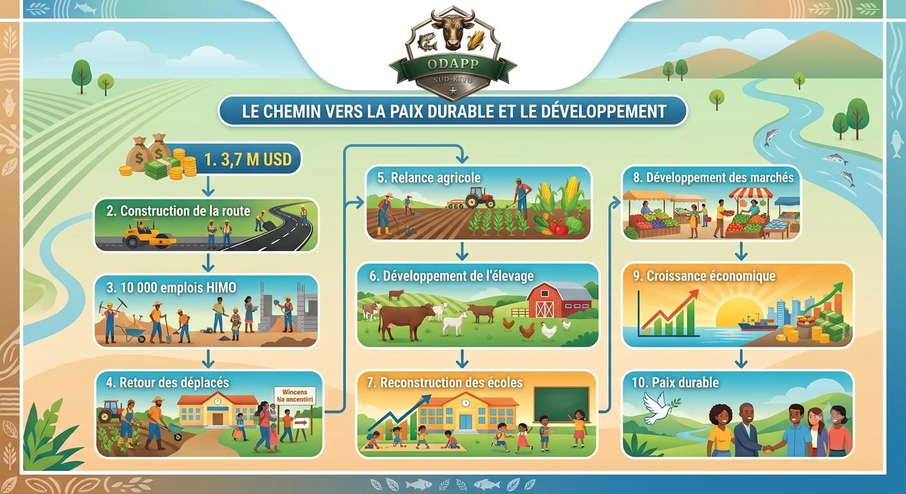

Transformer une région longtemps isolée en un véritable corridor économique, agricole et humain grâce à une route de desserte agricole de 152 km.

Plusieurs centaines de milliers d'habitants vivent dans une région difficilement accessible où les conflits armés ont détruit des centaines de villages, des écoles, des centres de santé et les principales infrastructures économiques.
Sans route, il n'y a ni commerce, ni investissements, ni retour durable des populations déplacées.


152 km de route, 18 ponts, et un avenir reconnecté pour plus de 300 000 personnes — chaque contribution compte.